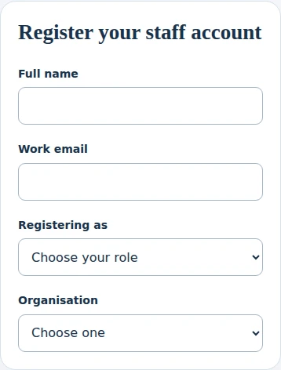
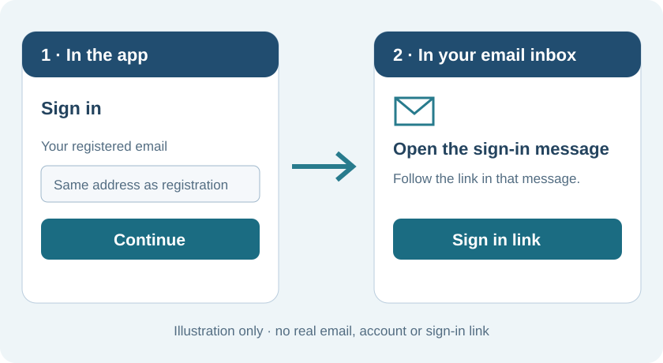
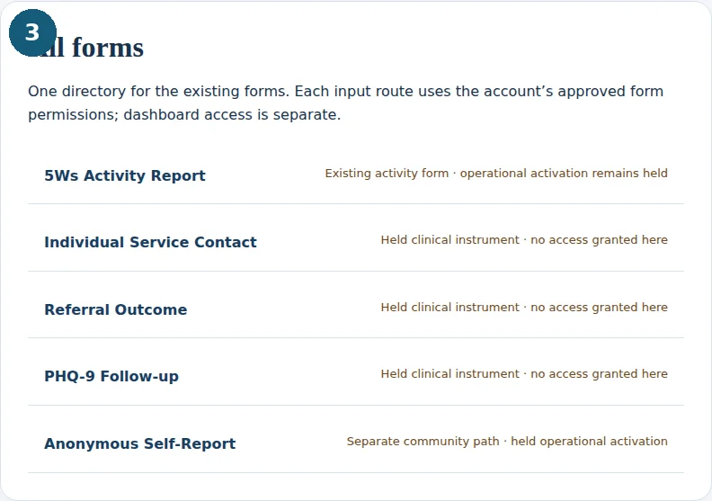
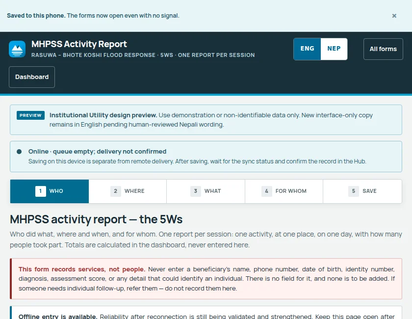
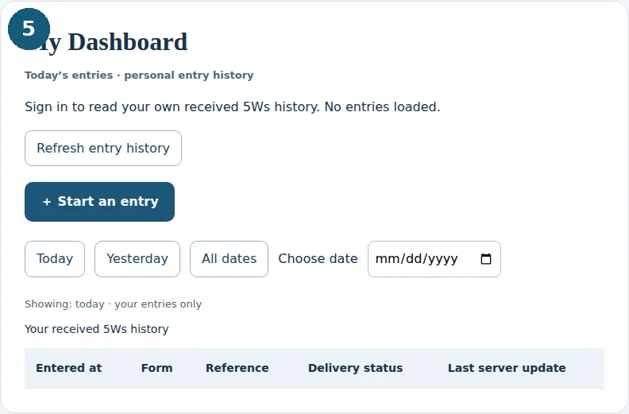

Register once. Record your work, check your entries,
or open the dashboard available to your account.
Tell us who you are and the role you are registering for. Your requested role and organisation do not grant access. Approved server assignments define your scope.
Sign in with your registered email to open the main dashboard and the sections permitted for your verified role. Entry-only field staff open My Dashboard instead. You do not choose permissions at each login.
No email is sent until you choose Continue.
Today’s entries · personal entry history
Your received 5Ws reports only—not your organisation’s dataset or an all-form history. Local drafts, pending delivery and correction editing are not shown here.
Showing: today · your entries only
| Entered at | Form | Reference | Delivery status | Last server update |
|---|---|---|---|---|
No entries loadedWhen connected, your entries and their delivery status will appear here. | ||||
One directory for the existing forms. Each input route uses the account’s approved form permissions; dashboard access is separate.
Five clear steps—from staff registration to checking a received report.
Blank screen references and a labelled email illustration. Guide text is in English; no personal or client data is included.
Choose Register. Add your staff profile, organisation, work location and requested role.
Access is confirmed separately; selecting a role does not unlock data.

Use the same email and browser to finish sign-in. If a valid session is saved, you do not need to request another link.
Never forward your sign-in link. If access is pending, wait for confirmation.

Open All forms and select the form for your task. For activity reporting, choose 5Ws Activity Report.
A form link is not permission to submit; use only your authorised instruments.

Follow the form sections. Check the activity, place, date and counts, then use the form’s Save report action.
Device save is not proof of server delivery. If status is unclear, keep the page open; do not repeatedly resubmit.

Open My Dashboard. Use Today, Yesterday, All dates or the date picker to find your received 5Ws entry.
This page currently lists received 5Ws reports only—not local drafts or other form histories.
